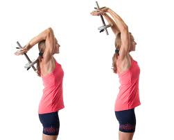

Welcome to Ejercicios efectivos de tríceps
Ejercicios fáciles y entretenidos para entrenar el tríceps en casa
2021.06.26 19:32 Portada Track & Run Entrenamientos El Taller del Corredor Fitness & Yoga Nutrición & Recetas Tendencias & Coaching Trail Galerías de fotos y vídeos Zapatillas Gadgets FITNESS VÍDEOS CLUB RUNNING Sign in Welcome! Log into your account tu nombre de usuario tu contraseña ¿Olvidaste tu contraseña? Password recovery Recupera tu contraseña tu correo electrónico Sign in ¡Bienvenido! Ingresa en tu cuenta tu nombre de usuario tu contraseña Forgot your password? Get help Password recovery Recupera tu contraseña tu correo electrónico Se te ha enviado una contraseña por correo electrónico. La Bolsa del Corredor Portada Track & Run Entrenamientos El Taller del Corredor Fitness & Yoga Nutrición & Recetas Tendencias & Coaching Trail Galerías de fotos y vídeos Zapatillas
Gadgets FITNESS VÍDEOS CLUB RUNNING Inicio Fitness & Yoga Ejercicios fáciles y entretenidos para entrenar el tríceps en casa Noticias & Blog Fitness & Yoga
Ejercicios fáciles y entretenidos para entrenar el tríceps en casa
Por LBDC - 20 octubre 2019El bíceps es el que se lleva el protagonismo a la hora de ejercitar los brazos, en muchas ocasiones. Sin embargo, no entrenar los grupos musculares de cada miembro de manera homogénea puede provocar lesiones y una morfología descompensada.
Si eres de los que cae en el error, presta atención al tríceps y no lo olvides siempre en favor del bíceps . Si conoces qué es, cuáles son su funciones, por qué es importante entrenarlo y cómo hacerlo, te concienciarás más.
Sobre el músculo tríceps
Como recuerda la Universidad de Granada en una de sus completas fichas , el tríceps es un músculo de tres cabezas a las que se da el nombre de vastos, y que ocupa prácticamente toda la cara posterior del húmero .
El tríceps actúa sobre la cintura escapular y sobre el codo. En el primer caso, el que actúa es el vasto medio o largo, participando en la extensión y rotación. En el segundo, en el del codo, los tres vastos intervienen en la extensión.
Aunque ha perdido parte de sus funciones a lo largo de la evolución, tiene gran importancia al evitar y caídas y proteger la parte más sensible del tronco y la cabeza . De ahí la necesidad de entrenarlo correctamente, aunque te contamos más sobre ello en el siguiente apartado.
¿Por qué hacer ejercicios de tríceps?
Es evidente que si los músculos están bien tonificados cumplirán mejor sus funciones, pero además de esto hay dos motivos fundamentales para entrar bien el tríceps. Aunque la zona en la que se extiende no es tan visible a nuestros ojos como la bíceps, el tríceps ocupa más en el grosor total del brazo, así que entrenarlo es favorecer la buena simetría de este. Lógicamente esto repercutirá en estética.
Por otra parte, ya decíamos que la función principal del tríceps es la extensora, contribuyendo a fijar bien la articulación del codo. En los entrenamientos de fuerza , por lo tanto, tener un tríceps bien tonificado y fuerte repercutirá en sesiones optimizadas y cada vez más exigentes.
Cómo hacer tríceps en casa
Antes de comenzar, recordamos unos consejos básicos para entrenar bien la musculatura, y repasamos el material necesario con algunas alternativas para que puedas ejecutar tus rutinas sin obstáculos.
Consejos
El consejo fundamental es que, al no tratarse de un músculo grande, aun ocupando buena parte del brazo, no se debe someter a un ejercicio demasiado intenso ni que ejerza mucha presión . Las cargas deben ser las justas, y hay que dar prioridad a la buena ejecución del movimiento: postura óptima y ritmo adecuado.
Partiendo de esta base, considera que debes someter el bíceps a una carga similar para un entrenamiento homogéneo, así que busca el equilibrio entre ambos. Fíjate en el peso que coges y en el número de repeticiones y series, y mantén armonía entre ambos músculos.
Material necesario
En el gimnasio dispones de todo un equipo de máquinas, mancuernas, pesas y bancos para entrenar el tríceps en ejercicios variados. Si estás empezando, pide ayuda a un monitor para que te guíe y, si tu gimnasio proporciona ese servicio, te surta con rutinas de ejercicios para varios días. Lo ideal es que se combine el cardio con el trabajo específico de grupos musculares para entrenamientos completos de fitness.
Pero no todo el mundo tiene tiempo o disposición para ir al gimnasio. No hace falta gastar dinero en la mensualidad ni en hacerte con materiales que luego utilizarás un par de veces , si eres de los que no tienes mucha constancia (aunque deberías). Apunta solo dos cosas básicas:
Esterilla o toalla . Vas a tener que hacer ejercicios en el suelo, así que te resultará más cómodo usar algo sobre lo que apoyarte. Lo ideal es utilizar una esterilla o una almohadilla algo mullida pero, si no, una simple toalla basta. Silla . Te puede servir de apoyo para hacer tus ejercicios de fuerza, pero apóyala contra la pared para que no se deslice y te caigas.También puedes ir haciéndote con un pequeño arsenal de enseres para el entrenamiento en casa . No hablamos de máquinas que cuesten mucho y ocupan demasiado espacio, sino de artículos de tamaño mediano o pequeño, que puedes encontrar en tu superficie especializada más cercana.
Mancuerna . Las de medio kilo pueden constar en torno a cinco euros , aunque es mejor hacerse con algo más. Como alternativa, seguro que tienes latas, botes o paquetes de alimentos en casa con ese peso. Bola de fitball . La pelota de pilates se puede encontrar desde unos cinco euros , y ayuda a ejecutar entrenamientos muy completos de tríceps, pectorales o glúteos, entre otros. En el día a día, ayuda a adquirir una postura correcta y mejora el equilibrio y la coordinación. Aro . No hablamos de un hula hoop, sino de un aro más pequeño y con soportes para su sujeción que también se suele utilizar en pilates. Es algo más caro, pero no pasa de los 15 euros , y también te puede servir para entrenar diversos grupos musculares. Bandas elásticas . Otro elemento económico, pues los puedes encontrar en sets de tres por unos cinco euros . Permite una amplia combinación de ejercicios para entrenar, entre otros músculos, el tríceps.No pierdas la cabeza comprando. Empieza con lo básico y, si ves que tienes constancia, ve haciéndote con tu pequeño equipo.
Pesa rusa, vinilo, mancuerna, gimnasia, pesa rusa, kettlebell, 2 kg, 3 kg, 4 kg, 5 kg, 6 kg, 8 kg, 10 kg, 12 kg, 14 kg, 16 kg, 18 kg, 20 kg, 8 KG Precio: -- ENCUENTRA LA MEJOR OFERTAMejores ejercicios para trabajar tríceps
Te proponemos una tabla con cosas que seguro tienes en casa: una toalla y una silla. Repite cada ejercicio unas 15 veces y haz al menos dos series, según el estado físico, dejando 10 segundos de descanso entre uno y otro. Si los haces bien, puedes aumentar las repeticiones. No olvides calentar antes , para lo que puedes hacer unas flexiones a partir de planchas bajas (apoyándote en los antebrazos).
Extensiones con el cuerpo inclinado . Coloca tus manos sobre el borde de una silla pegada a la pared y mantén el cuerpo extendido, recto, apoyándote sobre las puntas de los pies. Extiende y flexiona los brazos sobre la silla, de manera similar a cuando haces flexiones desde planchas altas . Debes llevar la frente hacia el borde de la silla.Planchas altas . La colocación es similar a la anterior, pero debes apoyarte en el suelo y no sobre la silla . Este ejercicio es lo que siempre se ha conocido como flexiones, y debes tener los dedos bien abiertos y la espalda recta en todo momento. Planchas cerradas . Es parecido al anterior, pero las manos están más juntas , separadas a la anchura de los hombros. Cuando lo ejecutes, debes mantener los codos cerca del tronco. Planchas con un brazo . Debes colocarte sobre el suelo de lado , con cadera y pierna izquierda bien apoyadas. Coloca la mano izquierda en el suelo, más o menos a la altura de la axila, y utilízalo para impulsarte y elevar todo el tronco, despegándolo del suelo. Coloca la mano libre sobre el hombro contrario, el que está más lejos del suelo, para que no moleste. Después debes cambiar de lado.
Dips . Este ejercicio puede resultar especialmente duro para quien no tiene mucha fuerza todavía. Apoya una silla contra la pared, colócate de espaldas a ella y pon las manos sobre el asiento , con las palmas apuntando hacia tu cuerpo. Apoya los pies sobre los talones y manténlos a cierta distancia de la silla, porque de lo que se trata es de subir y bajar el glúteo utilizando los brazos.
Además, por si quieres variar, te proponemos un ejercicio con cada uno de los elementos comentados más arriba.
Mancuerna . Siéntate sobre alguna superficie firme, como un banco, con la espalda bien recta. Lleva los brazos arriba, completamente extendidos por detrás de la cabeza, y sujetando la mancuerna con las dos manos . Extiende y flexiona los brazos por detrás de la nuca varias veces. Anthoni Montalván te muestra la rutina completa en su canal. Pelota de fitball . Siéntate sobre la pelota y encuentra tu equilibrio. Después, desplázate hacia delante, de manera que tus pies queden apoyados en el suelo y las manos en la pelota. Sube y baja el glúteo apoyándote en los brazos, que deben quedar detrás de ti . Aro . Debes estar de pie, con los pies abiertos al ancho de los hombros y las rodillas ligeramente flexionadas. Coge el aro con la mano izquierda por una de sus partes estrechas, no por los soportes. El ejercicio consiste en llevarlo hacia delante y hacia atrás y, al mismo tiempo, llevar el brazo que te queda libre al lado contrario e ir cambiando rítmicamente , girando la cara en cada movimiento. Sujeta luego el anillo con la otra mano para completar este sencillo ejercicio. El canal Pilates for the People tiene un vídeo entero dedicado al tríceps con el anillo de pilates. Bandas elásticas . Pon la goma en el suelo y pisa el extremo con el pie contrario a la mano con la que vas a trabajar. Da un paso por delante, sujeta bien la goma con la mano contraria y súbela por detrás de cabeza . Extiende y flexiona el codo varias veces, y luego repite con el otro brazo.Ir variando los ejercicios y los grupos musculares no solo ayuda al equilibrio y a asegurar que cumplen sus funciones por igual. También sirve para componer entrenamientos de fitness más dinámicos y motivadores, algo que apreciarás si te cuesta ponerte. Encuentra la voluntad y ponte en forma. ¡Engancha!
Etiquetas brazos destacada fitness Twitter Facebook WhatsApp Linkedin Email LBDCArtículos relacionados Más del autor
Noticias & BlogMuere el plusmarquista mundial de 500 metros indoor Abdalelah Haroun
Noticias & BlogEl ‘fail’ de Mo Farah abre las puertas de Tokio a Chiki Pérez en el 10.000
Noticias & Blog🏖 Rebajas de verano en Nike
1 Comentario
hotmail 14 febrero 2021 At 13:50best one
ResponderDeja un comentario Cancelar respuesta
DESTACAMOS
adidasLas mejores zapatillas de running para entrenamiento diario
Josep Gil - 20 junio 2021 1 Actualizado 20/06/2021 La mayoría de corredores y corredoras utilizan un modelo de zapatillas de Running para correr, sea entrenamiento entre semana, o competición, en laLas 10 mejores zapatillas de running Asics
12 abril 2021Zapatillas de Running Nike | La Guía más completa
30 marzo 2021Las 10 zapatillas neutras más vistas
13 marzo 202110 relojes gps para todos los gustos y bolsillos
23 febrero 2021
100% Running: entrenamiento, reviews de material, gadgets, nutrición, coaching y mucho más! • Webrun del @sport • You'll never run alone! Contáctanos: recoge(arroba)labolsadelcorredor.com Contacto Qué es LBDC © 2019 LBDC by Corring Aviso Legal
Uso de cookies
Este sitio web utiliza cookies para que usted tenga la mejor experiencia de usuario. Si continúa navegando está dando su consentimiento para la aceptación de las mencionadas cookies y la aceptación de nuestra política de cookies , pinche el enlace para mayor información.
ACEPTAR Aviso de cookies